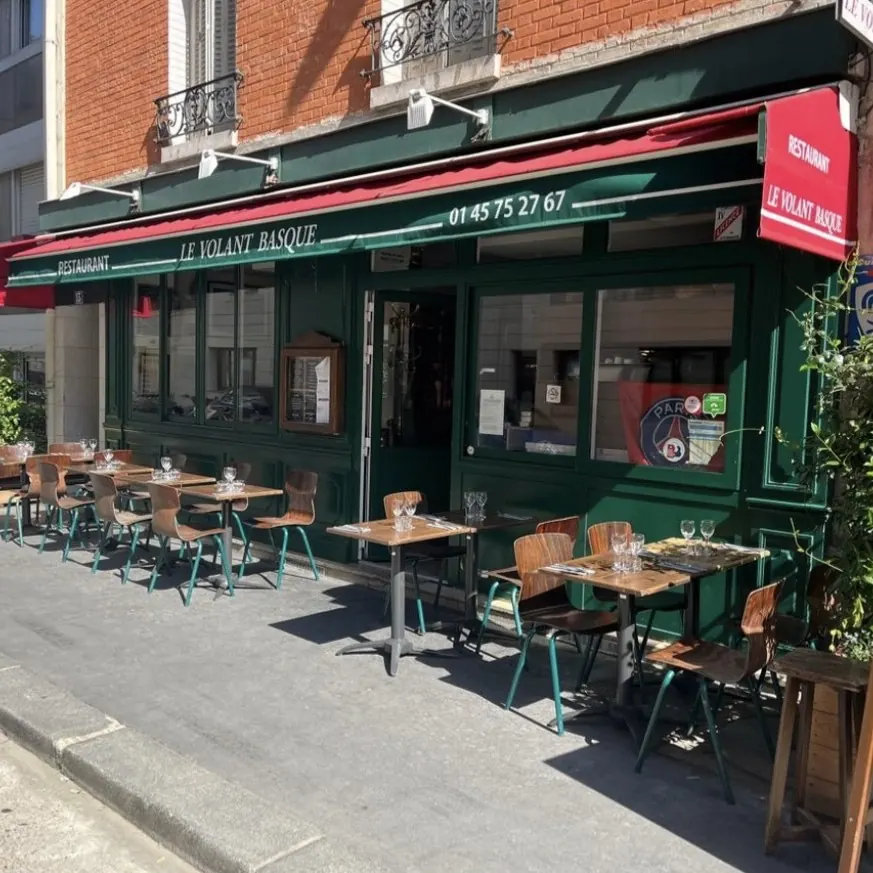

BnF Richelieu
1868년 앙리 라브루스트가 주철 기둥과 9개 도자기 돔으로 완성한 19세기 건축의 걸작 '라브루스트 열람실'과 일반에 전면 무료 개방된 거대한 타원형 '오발 열람실(Salle Ovale)', 프랑스 국립도서관 박물관.

15구 rue Béatrix Dussane의 바스크 식당이다. 상호의 'volant(운전대)'가 말해 주듯 자동차 경주 관련 소품이 걸린 캐주얼한 공간이지만, 요리는 바스크 향토 정통이다.
이 집을 15박 로테이션에 넣은 이유는 두 가지다. 첫째, 월요일 저녁에 문을 여는 몇 안 되는 정통 프렌치다 — 파리 비스트로 상당수가 일·월에 닫는다. 둘째, 저녁 서비스가 18:45에 시작해 파리 평균(19:00~19:30)보다 이르다.
에스플레트 고추(piment d'Espelette), 바욘 햄, 플랑차 구이 — 프렌치 비스트로가 반복되는 15박에 장르를 한 번 갈아 주는 자리다.
파리의 월요일 저녁은 비어 있는 날이 많다. 이 집은 월요일 저녁을 열고 18:45에 시작해 피곤한 날에도 쓸 수 있다. 바스크 향토 요리라 다른 날들과 겹치지 않는 것도 15박 로테이션에서 중요하다.
| 운영시간 | 월 18:45–22:45 (저녁만) · 화–토 12:00–14:15 · 18:45–22:45 |
|---|---|
| 휴무 | 매주 일요일 · 월요일 점심 |
| 가격대 | 세트 €29 (2코스) / €36 (3코스) · 전채 €9~€16 · 메인 €23~€32 |
| 예약 | 공식 온라인 예약 또는 전화 +33 1 45 75 27 67. 월요일은 특히 권장 |
| 소요시간 | 90분 재확인 |
| 항목 | 상세 정보 |
|---|---|
| 위치 | 13 rue Béatrix Dussane, 75015 Paris, France |
| 운영 시간 | 월 18:45–22:45 (저녁만) · 화–토 12:00–14:15 · 18:45–22:45 |
| 정기 휴무 | 매주 일요일 · 월요일 점심 |
| 가격대 | 세트 €29 (2코스) / €36 (3코스) · 전채 €9~€16 · 메인 €23~€32 — 개별 요리 가격은 카테고리 범위만 공개되어 있다 — 현장 확인 |
| 예약 | 공식 온라인 예약 또는 전화 +33 1 45 75 27 67. 월요일은 특히 권장 |
| 접근 교통 | 메트로 6호선 Dupleix역 도보 5분 (숙소 78 rue de Lourmel에서 도보 7~8분) |
| 공식 정보 | 공식 웹사이트 (verified_at: 2026-08-25) |
운영시간·요금은 2026-08-25 웹 조사 기준이다. 프랑스 식당은 연차 휴무와 단축 영업이 잦으니 방문 3~7일 전 전화로 재확인한다.
붉은 고기를 원하면 Pièce du boucher à la plancha, échalotes confites — 정육점 특수부위 플랑차 구이다.
월요일은 저녁만 영업하고 일요일은 닫는다. 비어 있는 열 밤 중 10/5(월) 에 배정했다. 9/26(토)에도 쓸 수 있으나 그날은 생제르맹 현장 저녁(Bouillon Racine)으로 잡았으므로, 그쪽 예약이 실패하면 여기가 대체다.
1868년 앙리 라브루스트가 주철 기둥과 9개 도자기 돔으로 완성한 19세기 건축의 걸작 '라브루스트 열람실'과 일반에 전면 무료 개방된 거대한 타원형 '오발 열람실(Salle Ovale)', 프랑스 국립도서관 박물관.

18세기 원형 곡물거래소를 세계적인 건축가 안도 다다오가 노출 콘크리트 원통 실린더로 리노베이션한 현대미술관. 프랑수아 피노 회장의 세계적 현대미술 컬렉션과 1889년 돔 천장 무역 파노라마 프레스코화.

렌조 피아노와 리처드 로저스가 건물 배관과 골격을 외벽으로 노출시킨 20세기 하이테크 건축의 전설이자 유럽 최대 근현대미술관. ⚠ 2025년 가을부터 2030년까지 전면 개보수 공사로 본관 폐관 중.

클로드 모네가 43년간 직접 꽃과 연못을 가꾸며 불후의 『수련』 대작을 창조해낸 살아있는 인상파 캔버스. 초록색 일본식 다리가 걸린 '물의 정원(Jardin d'eau)'과 핑크빛 모네 생가 아틀리에.

1900년 파리 만국박람회를 위해 건립된 45m 높이 아르누보 철골 유리 네이브(Nave)의 기념비적 국립 전시장. 2024 파리 올림픽을 거쳐 리노베이션 완료 후 재개관한 파리 문화 예술의 중심지.

중세 소르본 대학 교수와 학생들이 공용어로 라틴어를 쓰던 데서 유래한 800년 파리 지성의 요람이자 센 강 좌안(Rive Gauche)의 심장. 프랑스 위인들의 성소 팡테옹(Panthéon), 셰익스피어 앤 컴퍼니, 뤽상부르 공원.